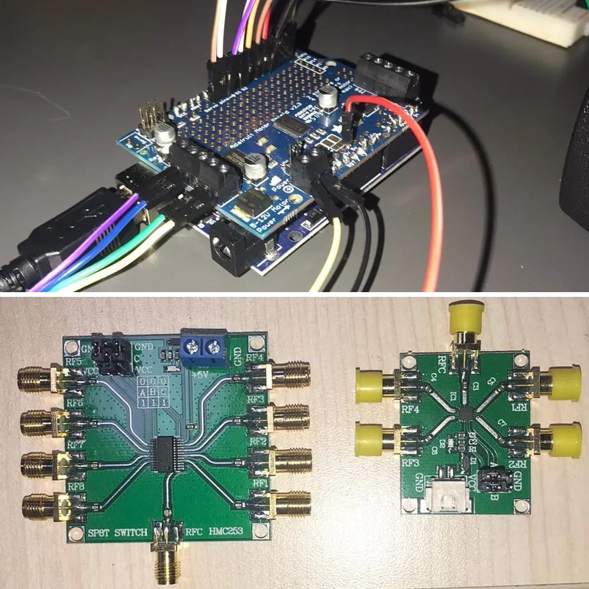

Portfolio
Two bodies of research, each carried from first-principles modeling through analysis and simulation to measured results on physical hardware, and the hands-on projects, from graduate coursework and from an undergraduate build, that put the toolkit together.
-

Real-time control of an underactuated gyroscope
A double-gimbal control moment gyroscope has two motors and an outer frame that no motor touches, so that frame can only be moved through gyroscopic coupling, and certain gimbal angles destroy controllability outright. I built the first real-time control stack reported for this configuration, watched my first controller fail on hardware in a way simulation never showed, and redesigned it around the constraint that broke it.
0.94 s settling, against 3.02 s 0.12° tracking RMS error 500 Hz real-time loop
- Methods
- Sliding mode controlAdaptive controlBarrier Lyapunov functionsFinite-time stabilityAdaptive LQRPhysics-informed observers
- Tools
- MATLAB and SimulinkQUARCPyTorch
- Hardware
- Quanser 3-DOF gyroscopeQ8-USB data acquisitionOptical encoders500 Hz control loop
-

A monolithic spring for high-frequency SiC power modules
Press-pack power modules clamp semiconductor dies with stacked steel disc springs that add resistance, inductance, and thermal resistance faster-switching SiC devices cannot tolerate. I replaced the whole stack with a single beryllium-copper block that serves as spring, conductor, and heat path at once, optimized against stress and deflection limits, then built and tested it.
148 µΩ DC resistance, against 856 µΩ 2.8 nH stray inductance 2 published patent applications
- Methods
- Multiphysics finite element analysisParticle swarm optimizationDesign-space scanningStress and deflection limitsThermal and parasitic modeling
- Tools
- COMSOLLiveLink for MATLAB
- Hardware
- Laser-cut beryllium-copper prototypesInstron mechanical testingRLC meter measurements
-

Hands-on projects from graduate coursework
Five course projects that took a design from equations to something that ran: a dual-output flyback converter designed from the magnetics up and qualified on the bench, a permanent-magnet drive emulated with two inverters and closed-loop current control on TI microcontrollers, parallel-robot kinematics and a literature review on a four-axis arm, machine learning notebooks and a proposed whale-identification pipeline alongside a swarm-optimized wireless power link, and a turn-off snubber for a photovoltaic battery charger.
±15 V flyback, built and qualified 12 kHz dq current control on a TI DSP 6 learning models trained
- Methods
- Flyback magnetics designdq-frame current controlPhase-locked loopsSpace-vector PWMSnubber sizingRobot kinematicsMachine learning
- Tools
- PLECS and PLECS CoderTI C2000Code Composer StudioPython
- Hardware
- Transformer windingPCB assemblyTwo-inverter test benchOscilloscope and LCR measurements
-

A portable antenna measurement system
Commercial multi-probe antenna measurement systems cost around $100K. We built a portable one for about $1400: the antenna under test turns on a stepper-driven table, RF switch boards route the probe signals to a PicoVNA, and MATLAB runs the whole measurement. My part was the motion and the measurement chain. I wrote the stepper control on an Arduino UNO with the Motor Shield Rev3, step-and-hold positioning with speed and direction control, brought the SP8T and SP4T RF switch boards into the same sequence, and built the MATLAB side of the PicoVNA link: connecting and calibrating the instrument, triggering block captures of S21, and synchronizing every capture with the table position through a GUI. A full two-dimensional radiation pattern took under a minute.
Under 1 min for a full 2D pattern About 70× cheaper than multi-probe systems $1400 of hardware
- Methods
- Stepper motor controlRF switch sequencingInstrument automationFar-field pattern measurement
- Tools
- ArduinoMATLABPicoVNA
- Hardware
- Arduino UNO and Motor Shield Rev3HMC253 SP8T switch boardSP4T switch boardRotating antenna table